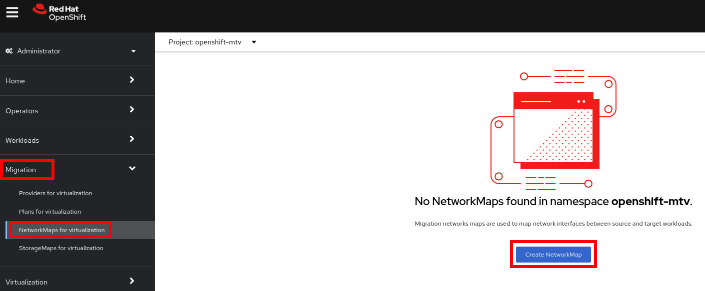
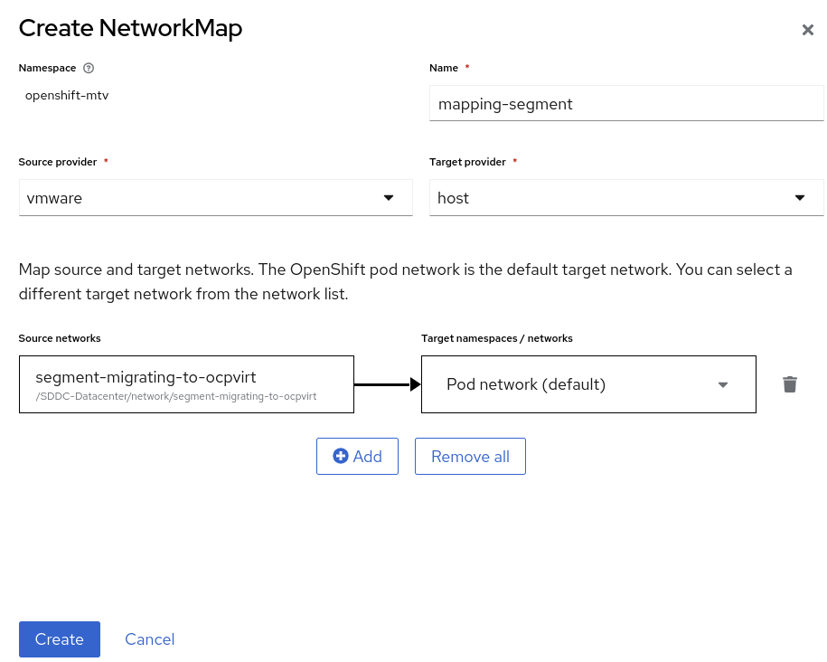
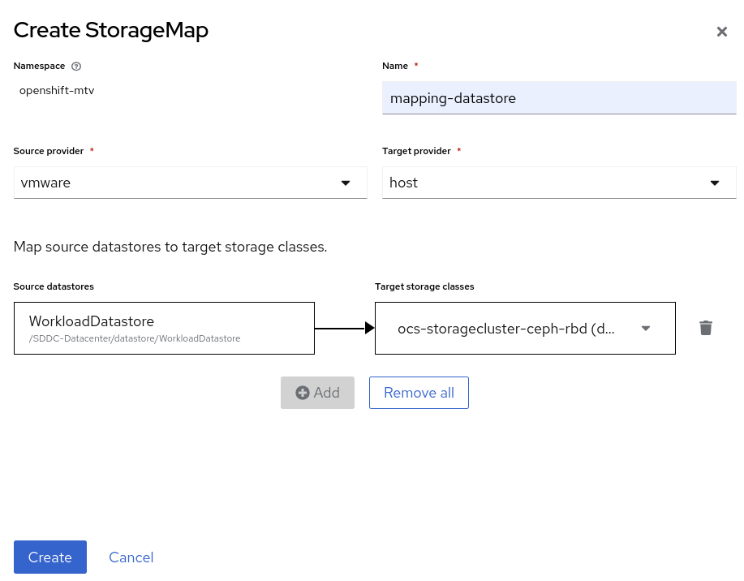
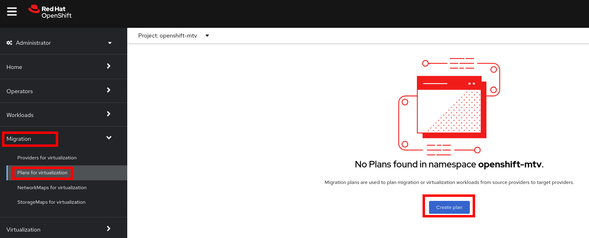
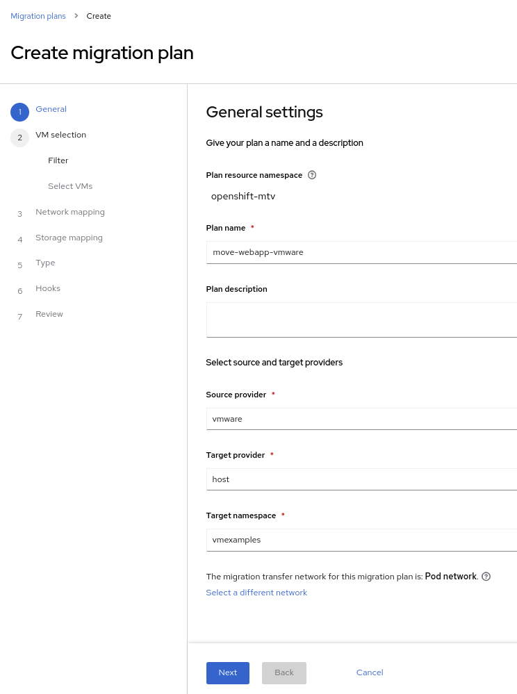
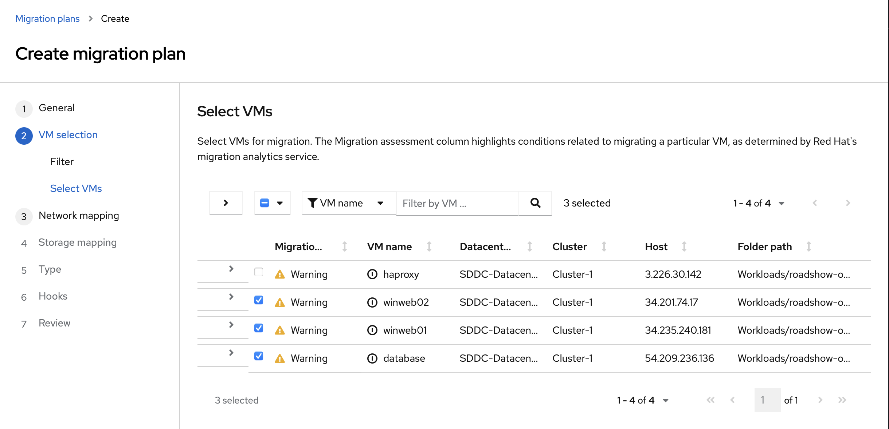
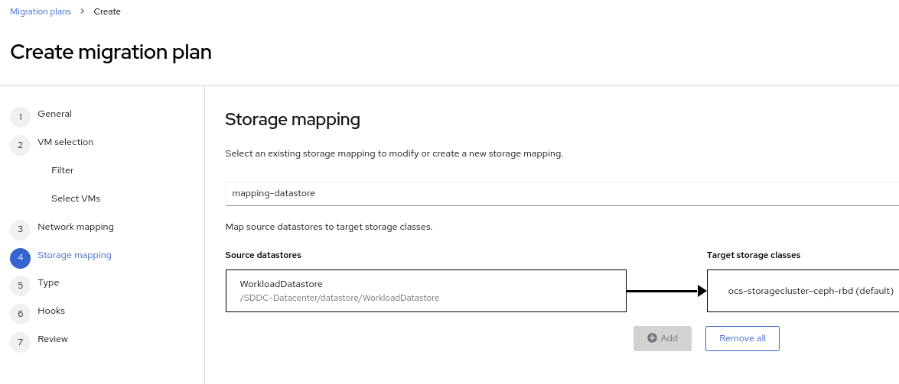
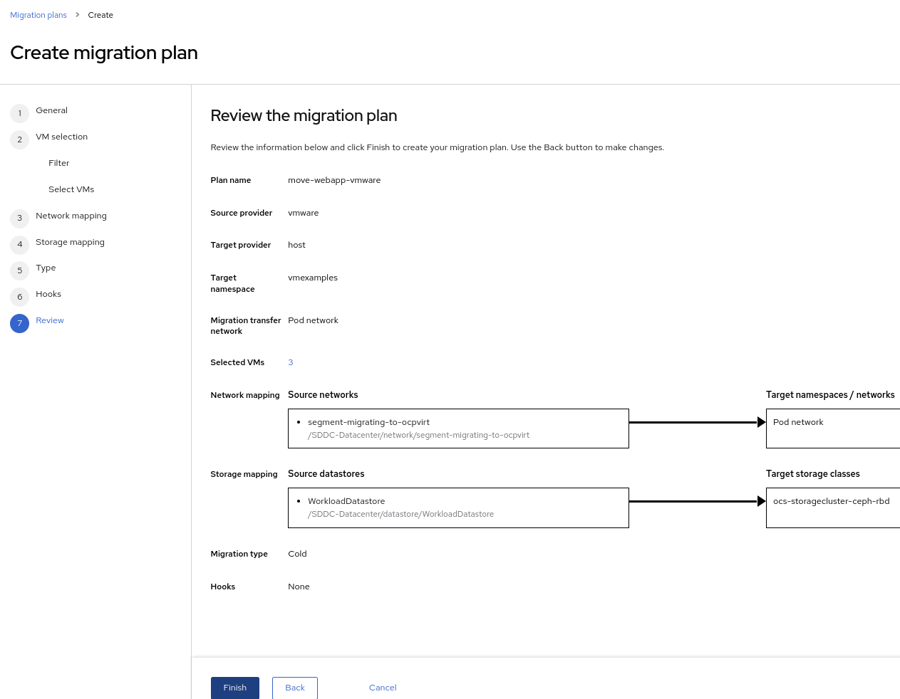
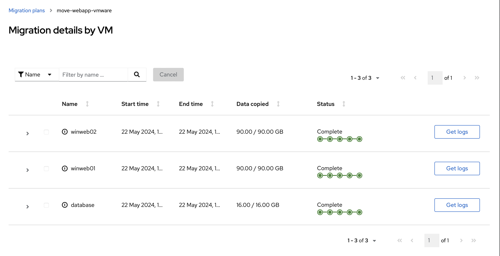

The Migration Plan
Create Storage and Network Mapping
Storage and networking are managed differently in VMware vSphere and Red Hat OpenShift. Therefore it is necessary to create a (simple) mapping from the source datastores and networks in VMware vSphere to the equivalent in OpenShift. This mapping will then be used to translate the VMware vSphere network and storage definitions to OpenShift network and storage definitions.
These only need to be configured once and are then reused in subsequent VM Migration Plans.
-
Navigate in the left menu to Migration → NetworkMaps for virtualization and press Create NetworkMap
 -
Fill in the following information in the appeared dialog box. Press Create.
-
Name:
mapping-segment -
Source provider:
vmware -
Target provider:
host -
Source networks:
segment-migrating-to-ocpvirt -
Target network:
Pod network (default)
-
-
Ensure that the created mapping has the Status
Ready
-
Navigate in the left menu to Migration → StorageMaps for virtualization and press Create StorageMap

-
Fill in the following information. Press Create.
-
Name:
mapping-datastore -
Source provider:
vmware -
Target provider:
host -
Source storage:
WorkloadDatastore -
Target storage classs:
ocs-storagecluster-ceph-rbd (default)
-
-
Ensure that the created mapping has the Status
Ready
Create and Run Migration Plan
Now that you have the virtualization provider and the two mappings (network & storage) you can create a Migration Plan - this plan selects which VMs to migrate from VMware vSphere to Red Hat OpenShift Virtualization and how to execute the migration (cold/warm, network mapping, storage mapping, pre-/post-hooks, etc.).
-
Navigate in the left menu to Migration → Plans for virtualization and press Create plan
 -
On the wizard fill the following information on the General settings step. Press Next when done.
-
Plan name:
move-webapp-vmware -
Source provider:
vmware -
Target provider:
host -
Target namespace:
vmexamples
-
-
On the next step, select
All datacentersand press Next
-
On the next step select all the VMs. Press Next:
 -
On the Network mapping step select
mapping-segmentand press Next
-
On the Storage mapping step select
mapping-datastoreand press Next -
Press Next on the steps Type and Hooks
-
Review the configuration specified and press Finish
 -
Ensure that the status of the plan is Ready

-
Press Start to begin the migration of the three VMs
-
After around 40 minutes the migration is completed
Having many participants performing the same task in parallel can cause this task to perform slower than in a real environment. Please be patient.